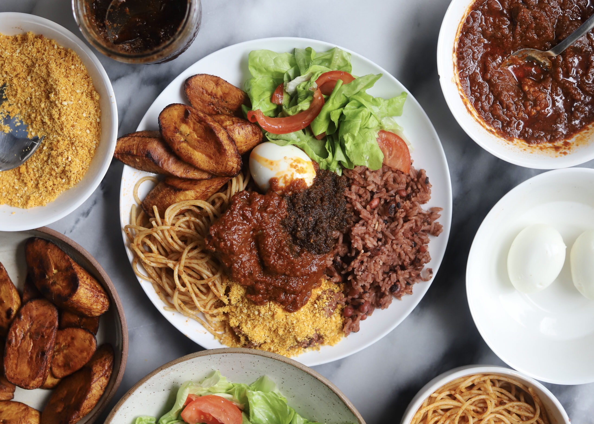

Waakye

Description of Recipe
This Ghanaian rice and beans dish, which pronounced as “wa-chee” is one of the most popular street food in the country.
It is sold by street side vendors, wrapped in banana leaves and served with multiple of the the following sides;
lamb stew, spaghetti (talia), avocado, shito (fish sauce), kelewele (fried plantain), fried fish, garri fotor, vegetable salad, egg, meat or fish.
Ingredients for Waakye
- Black eyed peas or cow beans
- White rice (e.g., basmati or jasmine) (brown rice can be used with longer cooking time)
- Dried sorghum leaves (also called millet leaves or waakye leaves)
- Baking soda (helps with texture and color absorption)
- Sea salt
- Water
Steps to bring this magic to Life!
- Pick out stones and grits from the beans.
- Wash the beans and waakye (sorghum) leaves, then add them to a pressure cooker.
- Pour in water up to the minimum level indicated in the cooker.
- Close the valve and cook until it reaches full pressure (about 15 minutes).
- Reduce heat and cook for another 10 minutes.
- Remove from heat and let it cool naturally for about 20 minutes, or run under cold water for faster cooling.
- Once depressurized, unlock the lid and check if the beans are tender with a slight bite.
- Transfer beans, cooking liquid, and waakye leaves to another pot.
- Wash rice and add it to the pot with the beans.
- Add more water if needed, then add salt and cover the pot.
- Cook rice until done, based on rice type instructions (e.g., golden/sella basmati).
- Remove waakye leaves and serve with your favorite sides.
Here's a teleportation portal back to the Home page
Home